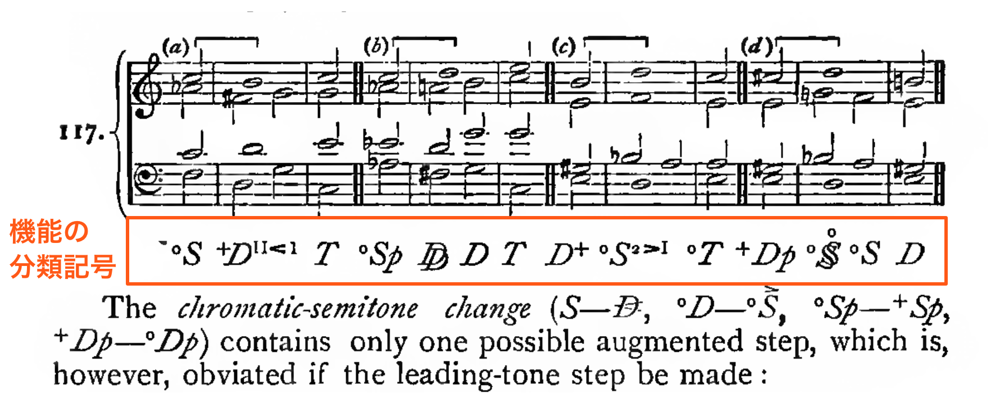

1. 什么是功能和声论
1. 什么是功能和声论
在上一篇中我们讲到：“六大基调和弦”分为大和弦三人组与小和弦三人组，它们各自肩负着不同的角色职责。

例如 I 扮演着大调的核心领袖角色，而 IV 和 V 则承担着推动歌曲情节展开的使命。因此，虽然它们在声学构造上同样都是大和弦，但这三者绝非同一存在。从听觉感知上说，进行到 I 和弦会带来一种“平稳着陆”或“终结圆满”的感受，在音乐理论中通常将这种状态描述为和弦“稳定”。
I V I
这种感觉与旋律回归中心音时所感受到的稳定感与归宿感属于同类认知现象。在 C 大调中，I 级的构成音是 C-E-G。正因为它是以中心音 C 为根音构建的和弦，所以在调性体系中天然发挥着赋予安定感的核心作用。
和弦的“功能”
在音乐理论中，这种和弦在音乐展开推进中所承担的动态角色被称为功能（Function）；而以“功能”为基石来探讨和弦进行的理论体系，统称为功能和声（Functional Harmony）。
功能 (Function) : 指某个和弦在其所在调性内部的意义。即在音乐展开和上下文语境中所被赋予的角色、行为特性的类别[14]。
在此之前，我们探讨的只是大和弦、小和弦等孤立单个和弦的物理属性。而本篇则是学习如何将和弦进行作为一门时间艺术去构建起承转合的关键转折点。
形形色色的功能论
然而这套和弦功能论，在不同流派和不同学者笔下存在着大量的变体与分支。最原始的版本诞生于19世纪末的德国（由胡戈·里曼 Hugo Riemann 提出），其最初的设计是采用两层分类体系：先划分3个主类别，每个主类别下再细分次级类别。

Hugo Riemann “Harmony Simplified” 英译版 (1896年)但正如你所见，由于符号标记体系极其晦涩复杂，这套原始记谱法最终未能在大众中普及开来。然而后世的理论家们深受其启发，纷纷根据各自的理解发明了自成一派的功能体系。导致不同著作里的视角大相径庭，这往往成为初学者困惑迷茫的根源[15]。 在本篇中，我们首先以相对忠于传统、且与现代流行音乐契合度最高的经典分类为基础进行讲解，最后再深入探讨各流派之间的分歧与异同。
2. 大调中的功能
在大和弦三人组中，I 和弦是全调的领袖与核心，只要行进到它，就能获得清晰的“收拢感”与“着陆感”。

例如在古典派时期，大调乐曲以 I 始、以 I 终是一大绝对原则。I 和弦肩负着为和弦进行画上圆满句号、统揽大局的“核心职责”。
IV 与 V 的功能差异
那么作为“下属同伴”与“属同伴”的 IV 和 V 又如何呢？虽然两者都扮演着为音乐注入“动势”、推动展开的角色，但它们的听觉感受截然不同：
I IV I IV
I V I V
虽然这种质感差异很难单凭文字概括，但对比之下可以明显感受到：IV 相对温和从容、宁静柔和，营造出一种“微微扬帆启程”般的平缓展开；而 V 则像是一股强劲的推力骤然升腾，洋溢着高昂、兴奋、紧迫感——具备营造全曲展开顶峰张力的强大推动力。


因此，在副歌高潮即将到来之前想要制造强烈蓄势张力时，选用 V 是最经典的教科书级操作；反之，若想营造悬浮飘逸、若即若离的停顿沉思感，IV 则更为契合……各个和弦的用武之地截然不同。在声学构成上同样是大和弦，但在调性引力场中，这三位同伴却各司其职。理解并运用这一规律去谱写乐曲，正是功能和声论的核心主旨。
为什么 V 会带来顶点般的紧张感？
为什么 IV 相对平稳，而 V 却能激发如此强烈的张力？其决定性钥匙依然在于中心音。 IV 和弦的构成音是 F-A-C。它包含了调式中心音 C，这就好比它的一只脚依然稳稳地留在中心大本营，因而偏离中心的幅度非常温和；而 V 和弦（G-B-D）中不仅没有中心音 C，反而包含了距离 C 仅之遥的敏感导音 B（Si），这正是其诱发强烈不稳定性与解决渴望的根本原因。

关于每一个单音的内在动势与性格，在旋律篇中会有极为详尽的剖析。总而言之，正是与调性中心音之间的远近距离与声学引力，赋予了和弦鲜明的性格差异。
功能的专属命名
即使单看一个 C 和弦，在不同调性中它既可能是 I，也可能是 IV 或 V。为了清晰界定这些不同的动态职责，音乐理论赋予了它们正规的名称：
| 和弦 | 功能名称 |
|---|---|
| I | 主功能（T - Tonic） |
| V | 属功能（D - Dominant） |
| IV | 下属功能（S - Subdominant） |
主（Tonic）、属（Dominant）、下属（Subdominant）——各大和弦肩负的角色由此被正式命名[16]。尽管功能和声学派林立，但将功能归纳为 T / D / S 三大主轴的构想，几乎是绝大多数流派的共同共识。
3. 小调中的功能
基调和弦中剩下的另外三位全都是小和弦。它们是构建“关系小调（Relative Minor Key）”的骨干成员，单靠这三位和弦串联，就能建立起纯正地道的小调色彩。

正如我们在上一课所确认的，它们内部同样维系着“领袖、下属同伴、属同伴”的对应关系。因此在功能上也遵循着相同的结构逻辑：VIm 负责担当收拢归宿的角色；而在两位展开同伴中，IIm 表现得相对平稳温和，而 IIIm 则营造出更具戏剧性、更深邃的情感张力：
VIm IIm VIm IIm
VIm IIIm VIm IIIm
大和弦三人组与小和弦三人组在听觉心理上的关系是否完全等同尚可探讨，但从音程度数的内在对应结构来看它们完全一致，因此这三位小和弦同样被归入了 T、D、S 三大功能阵营：
| 和弦 | 功能名称 |
|---|---|
| VIm | 主功能（T） |
| IIIm | 属功能（D） |
| IIm | 下属功能（S） |
至此，之前被称为“领袖、下属同伴、属同伴”的和弦分组，正式拥有了“主（Tonic）、下属（Subdominant）、属（Dominant）”这套严谨优雅的学名。
4. 功能的顺行与逆行
大和弦三人组与小和弦三人组各怀本领，共同为音乐的故事情节推进添砖加瓦：
| 功能类别 | 大调系 | 小调系 |
|---|---|---|
| 主功能（T） | I | VIm |
| 属功能（D） | V | IIIm |
| 下属功能（S） | IV | IIm |
推动 TDS 功能不断转换，直接关系到整首歌曲的情绪起伏。若将转换到不同 TDS 和弦时所诱发的心理感受比拟为“着陆、悬浮、紧张”，便可形象地整理为下图：

在自由派音乐理论中，我们将这种内圈逆时针的运动定义为功能顺行（Prograde Motion）；将外圈顺时针的运动定义为功能逆行（Retrograde Motion）[17]。
功能顺行
之所以将内圈称为“顺行”，是因为 T → S → D → T 这一方向的循环循序渐进地积累紧张感、随后一举将其释放缓和，完美契合了“紧张与缓和（Tension & Release）”这一普世核心审美法则。

功能顺行被公认为最为自然通畅、令人心旷神怡，尤其是从 D 直奔 T 的引力纽带极其坚韧牢固。这一行进逻辑从古典主义时期起便是中流砥柱，在现代爵士乐理中，更是以 S–D–T（即经典的 ii-V-I）为基石不断演化出一整个宏大的和声大厦。
功能逆行
然而，即便“顺行”被称为自然顺畅的行进，也绝不意味着反方向的 T → D → S → T 循环在音乐上有任何瑕疵。逆行的和弦进行同样具备独树一帜的迷人特质，能为乐曲赋予极其丰富深邃的情调。

从 T 跃迁至 D 瞬间拉满紧张度，极富戏剧张力；而从 D 缓步降落至 S，则能起到推迟终极紧张释放的“吊胃口”效果；此外，由 S 柔和落回 T（变格进行），则是营造舒缓、治愈、梦幻氛围的最佳选择。“顺行”与“逆行”在艺术表达层面具有同等重要的价值。
逆行进（Retrogression）
不过需要指出的是，在“功能逆行”中，D → S 的行进在古典与传统爵士乐理中曾长期不受待见，因而在通用传统教材中经常遭到“不可”、“禁止”、“违规”、“非常规”、“非基础逻辑”等近乎否定的严苛抨击[18]。正因如此，D → S 的进行在传统术语中常常被冠以带有贬义色彩的逆行进（Retrogression / 反向进行）。
排斥这一进行的内在逻辑在于：“人们渴望的是通过 T 一鼓作气释放 D 蓄积的张力，中途折返到 S 导致紧张感半吊子地被泄掉，显得拖泥带水”。但必须强调，这纯属极其陈旧的历史局限——**在现代流行音乐中，逆行进（D→S）早已司空见惯！**不仅如此，在某些特定流派中，逆行进反而是备受追捧的绝对主角：在布鲁斯（Blues）、经典摇滚乐（Rock 'n' Roll）以及雷鬼音乐（Reggae）中，V - IV 的动势不仅不是禁忌，反而是最具标志性的灵魂招牌！
打开音乐示例 ↗ 1-1-4-1-5-4-1 进行
打开音乐示例 ↗ 1-5-4-4 进行
这恰恰印证了我们在绪论中所强调的核心观点：“传统乐理中宣扬的那些所谓规则，充其量不过是特定流派的内部地方性行规（Local Rules）而已”。 因此平时创作完全无需被这些条条框框束缚；只有当你明确想要重现古典巴洛克风味或标准传统爵士调性时，才需要“入乡随俗”，有意识地克制逆行进的使用。关于这些昔日禁忌是如何一步步被打破、又如何在当下重放异彩的历程，将在第I章后半部分的“连接理论”中做全景展现。
5. 和弦功能的语境依赖性
大和弦三人组与小和弦三人组看似整整齐齐地被划入了 T、D、S。但在实际歌曲中，这六大基调和弦通常是紧密抱团、混合协作的。小和弦常作为大和弦的点缀陪伴，反之亦然，共同构建出更加复杂立体的调性格局。其结果就是：取决于和弦的前后衔接语境，某个和弦所扮演的实际功能角色并非一成不变。其中最具典型代表性的，便是神秘的 IIIm。

这个和弦处在极其微妙复杂的尴尬地位：当它踏入大调环境时，在很多语境下将其视作 I 的某种衍生变体反而更加合情合理。粗略来说，原因之一在于 I 和弦与 IIIm 和弦共享了两个完全相同的构成音[19]：

虽然并非总是如此，但在许多情境下，它确实理应被当作 T 来对待。 这里就是一个极其生动的例证，其和弦进行如下：
I IV I I IV I I IV IIIm IIm V I
乐曲先是连续重复了两次平缓温柔的 4-1（S–T）动势；到了第三次，旋律完全相同，但和弦却灵巧地变成了 4-3，最后以经典的 2-5-1（S–D–T）圆满收尾。 审视这一语境，第三处的 IV → IIIm 显然是在呼应前两次的 IV → I，只是加入了一点微妙的变化点缀。反复出现的相同旋律配合前置的 S–T 语境，赋予了此时的 IIIm 浓厚的主功能（T）神韵。 不仅如此，紧随其后便有明确行使属功能的绝对霸主 V 在静候，前面还有为其“助跑”的 IIm。考虑到最后 2-5-1 所铺陈出的情绪高潮，此处的 IIIm 怎么看都不像是一个戏剧性张力顶峰（D），反而更像是一个带着些许惆怅的柔和着陆点（T）。用折线图来具象化的话，正是这样的起伏轨迹：

为了更直观地感受这一点，我们把 IIIm 所在的位置分别替换为 I 和 V，对比聆听：
将 IIIm 替换为 I
将 IIIm 替换为 V
换成 I 之后，连续三次出现 4-1 的平缓动势，显得无比自然贴切；而一旦换成 V，此处的情绪突然剧烈上扬暴冲，与原本那份沉静温柔的氛围产生了强烈违和感——坦白说，显得极为突兀生硬。 由此对比可见，在这个具体语境中，IIIm 所扮演的绝不是掀起紧张巨浪的 D 功能，而是让音乐暂时获得停歇沉淀的 T 功能[20]。 此外，在 IIIm 和弦上方唱出的旋律中究竟是 I 的和弦音占多数还是 V 的音占多数，同样会显著左右听感。在这次的谱例中，旋律恰恰包含了唯独属于 I 的和弦音，使得该段落的 T 感进一步被坐实。
正是这样一系列极其细腻微妙因素的层层叠加，导致了 IIIm 的功能产生了摇摆。这是它在纯小调阵营中抱团时从未展现过的复杂面貌。

在许多现代功能和声学派中，确实直接将这种情况下的 IIIm 归为 T 功能。正如我们在开篇对和弦功能的定义：“在展开与上下文语境中所被赋予的角色”，和弦的功能从来就不是单体孤立决定的，而是由整个音乐流动的宏观上下文共同铸就的。
- 和弦功能的语境依赖性 表面上看结构完全相同的同一个和弦，受前后音乐上下文语境的牵引，其所承担的“角色”可能会发生转变。例如 IIIm 既能够行使 D 功能，也完全能够胜任 T 功能[21]。
至于究竟如何裁决一个和弦的具体功能，原本理应如前文所述全面权衡各项动态因素；但后世的各类功能乐理为了便于传授，往往对其进行了大幅简化，甚至各立门派：古典派往往设定苛刻条件，如“若后续和弦接的是 IV 或 IIm，则判定为 T”；而爵士学派则大而化之，直接武断定性“在大调环境中 IIIm 一律算作 T”[22]。
同一个物理和弦居然能一会儿扮演紧张、一会儿扮演缓和，这听起来或许不可思议；但前后关系与旋律走向的心理引力正是如此强大。声学形态相同的和弦，却能承担截然不同的艺术使命——这正是音乐深邃迷人的魅力所在，揭示这一本质也正是功能和声论诞生的真正初衷之一。
小结
综上所述，担任领袖大将的 I 与 VIm 属于主功能（Tonic），带来温和从容展开的是下属功能（Subdominant）的 IV 与 IIm，营造高潮顶峰的是属功能（Dominant）的 V 与 IIIm，而其中 IIIm 具有不可一概而论的双重两面性……这便是六大基调和弦的宏观全貌。

6. 倾听对比体验
接下来进入超精彩的实战聆听时间！！通过经典的四和弦循环，亲耳领会 T、D、S 的微妙差异。为了控制变量，我们全程沿用同一段固定旋律，为其搭配各种截然不同的和弦进行：
通常随意重新配和声（Reharmonization）很容易产生撞音违和，但在此处我们巧妙调整了旋律线，使其能够天衣无缝地包容各种走向。请务必用心体会：完全同一条旋律，如何在不同的和弦进行烘托下展现出风姿绰约的多样表情。 在现阶段要准确辨析每一种质感的学名或许尚有难度，但其中一定会有某些让你瞬间心动的色彩。不妨找到你最钟意的那几套走向，直接运用到你的创作中去吧！
T–S–D–T
以 T 始，以 T 终。这是最为安稳扎实的骨架。其中遵循功能“顺行”的 T–S–D–T 是最基石的经典范式，对绝大多数人来说听起来都是最顺理成章的。
| 进行 | 试听 |
|---|---|
| 1-4-5-1 | |
| 6-4-5-1 | |
| 6-2-5-1 | |
| 6-2-3-6 |
虽然 T–S–D–T 的排列组合非常多，但以上四种无疑是最具代表性的翘楚。尽管明暗氛围各有千秋，但就功能层面的起伏——亦即“紧张与缓和”的故事线而言，它们都属于同一种起承转合范式。
T–T–S–D
同样是功能顺行，在开头连续安排两个 T 功能和弦，就能呈现出截然不同的推进张弛感：
| 进行 | 试听 |
|---|---|
| 1-6-2-5 | |
| 1-3-4-5 |
其中 1-6-2-5 是黄金时代老式爵士乐中最经典的套路进行。而在 1-3-4-5 中，此处的 IIIm 显然可以充分被视为 T 功能。 将四小节循环收尾处的第4个和弦设计为 D 功能，极具向下一轮循环发起强力冲锋的推进动能。
T–D–S–T
作为功能逆行的 T–D–S–T，在勾勒“紧张-缓和”曲线上展现出完全相反的笔触：它从开头的 T 瞬间跃升至代表顶点的 D，然后再悠扬地一步步放缓释放紧张度：
| 进行 | 试听 |
|---|---|
| 1-5-4-1 | |
| 6-5-4-1 | |
| 6-3-4-1 | |
| 6-5-2-6 |
尤其是由 IV → I 带来的轻柔着陆感，极具脱俗的魅力。
往复穿梭（摇摆进行）
当然，功能的轮转绝不仅限于死板地单向画圈，诸如 T–D–T–S 或 T–S–T–D 这样反复变向往复穿梭同样极其生动：
| 进行 | 试听 |
|---|---|
| 1-5-6-4 | |
| 1-3-6-4 | |
| 6-4-1-5 |
1-5-6-4 与 6-4-1-5 是欧美流行神曲的绝对常青树，甚至在 Wikipedia 上拥有专门的专属词条。
S–D–T-*
虽然在古典传统中极力回避，但在现代流行乐中，直接以 S 作为和弦进行的开端已经蔚然成风。 不在安稳沉重的地基上起步，而是从悬浮微晃的状态出发。借此能精准勾勒出迷惘、迟疑、甚至是失恋的凄美与黎明的希冀等复杂细腻的情感世界：
| 进行 | 试听 |
|---|---|
| 4-5-1-6 | |
| 4-5-3-6 | |
| 4-5-6-3 | |
| 4-3-6-5 | |
| 2-5-1-4 |
相比此前以 I 开头的“明快安定”或以 VIm 开头的“沉郁安定”，这种若隐若现、飘然若失的开端感格外抓耳。
2-5-1 是爵士乐中的至高基石；4-5-6 在流行舞曲和电子乐中普及度极高；而在 J-Pop 中，4-5-3-6 更被誉为风靡数十年的“王道进行”。在 4-5-3-6 中，IIIm 究竟该算 T 还是 D 处于极度暧昧的边缘——事实上，正是这种“似是而非的朦胧感”构成了该进行的无上魅力。
S–T–D-* / S–S–T–D
从 S 起步并采用功能逆行，便会形成 S–T–D 的动势走向：
| 进行 | 试听 |
|---|---|
| 4-1-5-6 | |
| 4-6-5-3 | |
| 2-4-1-5 |
“从不安起步，本以为安定平复，紧接着却掀起惊涛骇浪”——这种跌宕的情绪推进可谓极为抓人、戏剧张力拉满。2-4-1-5 则具有连续两个 S 和弦的特征，在到达 T 之前维持着较长的温和平稳期。这类进行在古典和爵士中不多见，但在近年来的全球流行音乐中迅速蹿红。
D–T–S-*
开头直接以 D 迎头砸来的设计虽然绝非主流，但它拥有“起步即满火”的强大爆发力，惊喜感十足：
| 进行 | 试听 |
|---|---|
| 5-6-4-1 | |
| 3-6-2-5 |
由于平时接触这类实战案例较少，我们专门精选了从 V 或 IIIm 起步的代表作歌单：
其中广泛使用了 5-6-4-1、3-6-4-1、5-4-3-6 等独树一帜的行进。
彻底不用 T（无主和弦循环）
刻意通篇不使用 T 功能和弦，在当代流行音乐中同样是一种高级且极具杀伤力的战术。不断在亢奋与平复之间往复摇摆，却自始至终绝不彻底落地。借此可以让整首作品永远悬浮在永动机般的未完成张力之中。
| 进行 | 试听 |
|---|---|
| 4-5-3-4 | |
| 4-4-2-3 | |
| 4-5 |
在这种情况下，IIIm 的定位再次变得微妙，将其视作温和的 T 替补也完全自洽。但无论如何，关键在于其抹去了能够带来决绝收拢感的 I 或 VIm。这种永不停歇的流转循环感，在电子音乐、Drum & Bass、Techno、Funk、Hip-hop 等强循环导向的音乐风格中备受宠爱：
例如 NewJeans 的《Super Shy》通篇仅在 IIIm– IIm 间循环；Chic 的《Good Times》则执着地在 IIm– V 之间律动。这种得不到彻底释放的悬留张力在艺术表达上有着无尽的施展空间：辽阔广袤的地平线纵深感、如梦似幻的悬浮空间感，抑或彻夜狂欢永不落幕的舞池派对感。
更多可能无穷无尽
正如之前所述，以4个和弦构成一个单元是流行乐的标配模式。单纯基于六大基调和弦的组合，数学上就有足足 $6^4 = 1296$ 种可能进行的排列空间！！
因此在作曲入门阶段，强烈建议大家先彻底玩转并吃透这六大基调和弦的奥秘。单凭上述呈现的这些进行，就已经足以谱写出无数风格迥异、帅气吸睛的佳作了。完全不必盲目追求掌握海量偏门和弦。
功能导航图
将和弦进行与功能循环的内在脉络汇聚成图表，便呈现出如下全局导航图：

在这张图中，由左向右推进的“功能顺行”整体听感通顺流畅；唯一需要留心的正如前文所强调的仅有 IIIm → I（为了强化提醒，图表中特意将该连线断开）。 至于“由右向左”的行进以及“同功能内部的平行转移”，则融合了各种极佳与极具挑战性的用法，需要庞大的理论支撑，在此暂且不作展开。这一块的深度宝藏将在第I章后半部分的“连接理论”中做抽丝剥茧的细致解析。
7. 各流派之间的分歧与认知
在结尾部分，我们再次回到流派哲学的问题上。前面介绍的基准分类法，是吸纳了部分原始理论精髓的日本古典和声体系的改良版；而在当今音乐圈中流传最广的，莫过于**伯克利音乐学院学派（Berklee Method）**的分类法。由于功能论变体丛生从未达成统一，最容易引发教学分歧的正是前文反复探讨的大调 IIIm。
之所以分类结果互相打架，原因非常纯粹：不同流派的分类定义、考量基准与实用目的根本不同。仔细想想，“根据和弦在音乐中的角色进行分类”本就可以有成百上千种标准。究竟把什么作为判定“属功能”的核心依据不同，最终分类结果自然大相径庭。
在功能理论方面，古典派与爵士派的哲学理念分歧尤为剧烈，各自都严格服务于自身流派的音乐风格与实战体系。这是我们在绪论中所提到的“流派分野”最赤裸裸的具象化体现：

更为致命的是，所有流派都自称为正统的“功能和声”，导致学习者在接触到另一学派的资料时，往往误以为“对方讲的是错的”…… 对于不熟悉流派历史发展脉络的人而言，这确实极其容易造成困惑。关于这层恩怨纠葛，我们将在第VI章与第VII章深入理解爵士与古典各自的核心哲学之后，最终在第VIII章给出彻底透彻的终极解答[23]。
自由派与功能论的态度
正因存在如此多的纷繁争议，自由派音乐理论选择与纯粹的功能和声论保持理性的安全距离。作为六大基调和弦的直观分组工具它确实非常趁手，作为基础套路指引我们也会因地制宜地灵活调用，但原则上我们绝不强行将所有复杂的调外和弦死搬硬套地塞进所谓的三大功能之中。追根溯源，这套功能论诞生于19世纪末，比古典主义理论整整晚问世了将近150年！

因此，功能和声论绝非音乐理论中不可或缺的唯一圣经。很多极其权威严肃的现代乐理专著压根就不采用功能论[24]，试图把世间所有和弦强行塞入 T、D、S 框架的书籍其实远比人们想象的要少。
从 IIIm 的例子便能清晰看出：和弦本质上每一个都拥有独特鲜活的性格，这正是音乐博大精深的魅力所在。盲目执念于把所有和弦粗暴地分成3堆，在实战中没有任何实际益处。因此我们绝不画地为牢，仅仅将其视作“好用时拿来用一用的轻巧工具箱”随身携带即可。
总结
- 和弦在调内所占据的相对位置所衍生的音乐内涵与角色被称为“功能”，以此为基石构建的和弦理论称为“功能和声”。
- 功能分类中最经典的做法是将和弦划分为以 I、V、IV 为代表的**主功能（T）、属功能（D）、下属功能（S）**三大阵营。
- 通过追踪 TDS 的流转动势与“着陆”时机，能够从理论维度深刻解析和弦进行的独特魅力。
- TDS 是极为好用且关键的思想武器，但若强求将所有和弦死板归入三类，必然会引发各种矛盾与局限。将其作为“基调和弦的高效分组法”来理解才是最健康明智的姿态。